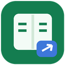

한 단어를 선택하면
네이버 영어사전으로 조회warehouse

드래그한 내용에 따라 네이버 영어사전과 Google 번역을
자동으로 나눠 사용하는 Chrome 확장 프로그램입니다.
한 단어를 선택하면
네이버 영어사전으로 조회문장을 선택하면
Google 번역으로 조회 · 기본 한국어chrome://extensions를 입력합니다.extension 폴더를 선택합니다.manifest.json이 바로 들어 있는 폴더를 선택해야 합니다.처음에는 버튼 모드로 시작합니다. 드래그하면 사전 찾기 또는 번역하기가 나타나며, 누르면 조회합니다. 설치만으로 기존에 열려 있던 페이지에 소급 적용되지는 않으므로 새로고침이 필요합니다.
드래그한 내용 옆에 작은 버튼이 뜹니다.
버튼을 누르기 전에는 외부 조회를 하지 않습니다.
선택을 마치고 기본 0.25초 뒤 바로 조회합니다.
결과는 선택한 내용 근처의 말풍선에 표시합니다.
모든 설정은 변경하면 저장됩니다. 아래의 설정 저장 버튼으로도 저장할 수 있습니다. 결과창의 문장 번역 / 사전 찾기 버튼을 누르면 자동 분기를 직접 바꿀 수 있습니다.
| 선택한 내용 | 기본 동작 |
|---|---|
warehouse | 네이버 영어사전 |
don't · state-of-the-art | 네이버 영어사전 |
data warehouse | Google 번역 |
I work with data. | Google 번역 |
| 숫자·기호만 선택 | 조회하지 않음 |
기본값은 한 단어만 사전으로 보냅니다. 숙어도 사전으로 찾고 싶다면 세부 설정에서 두 단어 또는 세 단어 이하로 넓힐 수 있습니다. 문법 분석에 기반한 문장 판별은 아닙니다.
• 결과 복사와 공식 사이트 열기
• 우클릭 메뉴로 사전·번역 직접 선택
• 사이트별 드래그 조회 제외
• 입력창·편집 영역 지원과 제외 옵션
• 번역 언어와 대기 시간 변경
• 작은 창 하나를 재사용
Alt + Shift + D
macOS는 Option + Shift + D.
충돌 시 chrome://extensions/shortcuts에서 변경하세요.
말풍선 바깥을 클릭했을 때 남아 있는 선택으로 말풍선이 한 번 더 나타나는 처리를 수정했습니다. 버튼 확인 모드와 자동 조회 모드 모두 적용합니다. 같은 단어를 새로 드래그하거나 다른 단어를 선택하면 다시 사용할 수 있습니다.
확장 프로그램이 켜져 있는지 확인한 뒤, 조회하던 웹페이지를 새로고침하고 다시 선택하세요. 이전 버전은 모든 통신 예외를 같은 문구로 표시해 원인을 확정할 수 없었습니다. 이번 버전은 오류 코드와 상세 메시지를 표시합니다.
일시적인 채널 오류는 한 번만 다시 시도합니다. 연결이 만료되면 사용자가 누르는 새로고침 버튼을 표시하며 자동으로 페이지를 새로고침하지 않습니다. 확장 설정 하단의 연결 확인으로 설치 버전과 확장 내부 응답 여부를 확인할 수 있습니다.
노션 같은 작성 가능한 영역과 입력창도 기본으로 지원합니다. 편집기의 선택 변경을 더 안정적으로 감지하고, 빈 좌표 때문에 말풍선이 왼쪽 위로 이동하던 처리를 수정했습니다. 긴 결과는 선택 주변 공간에 맞추고 스크롤·확대 시 위치를 갱신합니다. 자동 조회와 버튼 확인 모드는 그대로 사용할 수 있습니다.
네이버 상세 사전 조회 요청을 수정하고 Google의 웹 번역 경로를 연결했습니다. 네이버 상세 조회가 제한되면 같은 단어에 대한 네이버 사전 요약을 표시합니다. 결과에 요약임을 안내하며, 비슷한 검색어를 원래 단어의 뜻으로 표시하지 않습니다.
조회 실패 시 오류 원인과 다시 시도 버튼을 보여 줍니다. 새 창 자동 전환은 제거했습니다. 이전 버전 설정에 작은 창 모드나 자동 전환이 켜져 있어도 적용하지 않습니다. 공식 사이트는 결과 하단의 링크 또는 작은 창 버튼을 직접 눌렀을 때만 엽니다.
기존 버전 교체: 먼저 기존 확장을 끄거나 제거하고 수정본의 extension 폴더를 로드하세요. 기존 설치 폴더의 파일을 덮어쓴다면 확장 관리에서 해당 확장을 다시 로드하세요. 사용 중인 웹페이지도 새로고침해야 합니다. 기존 버전을 함께 켜 두면 예전 코드가 계속 새 창을 열 수 있습니다. v1.1.0까지의 편집 영역 제외 설정은 이번 업데이트에서 한 번 해제되며, 이후 직접 선택한 제외 설정은 유지합니다.
warehouse → 창고, Google에서 The warehouse is ready. → 창고가 준비되었습니다.를 수신했습니다. v1.1.3의 로직·이벤트·좌표·메시징 테스트 120개를 통과했습니다. 이번 버전에서는 외부 연결 시험을 반복하지 않았습니다. 이 환경에서 실제 Chrome 설치, 노션 작성 화면과 말풍선 렌더링은 실행하지 못했습니다.먼저 확장 관리에서 선택 사전이 켜져 있는지 확인하고, 조회하던 웹페이지를 새로고침하세요. 확장 관리 페이지만 새로고침하는 것으로는 기존 웹페이지의 스크립트가 갱신되지 않습니다. 계속 실패하면 도구 모음의 확장 아이콘을 열어 연결 확인 결과와 말풍선의 오류 코드·오류 상세를 확인하세요.
설치하거나 확장 프로그램을 다시 로드한 뒤에는 웹페이지를 새로고침해 주세요. 확장 프로그램 설정의 사용 스위치와 Chrome의 사이트 접근 권한, 사이트 제외 목록을 확인해 주세요. 입력창과 편집 영역도 기본 지원합니다. 세부 설정에서 편집 영역 자동 조회 제외를 직접 켰다면 해제해 주세요. 한 번에 5,000자를 초과하거나 숫자·기호만 선택하면 조회하지 않습니다.
일반 HTTP·HTTPS 웹페이지에서 사용할 수 있습니다. Chrome 설정 페이지, Chrome 웹 스토어, 다른 확장 프로그램 페이지, Chrome 내장 PDF 뷰어에는 말풍선을 넣을 수 없습니다. 이 사용 안내를 확장 프로그램 페이지로 열었을 때에도 드래그 테스트는 일반 웹페이지에서 진행해 주세요.
Chrome 확장 프로그램 관리 화면에서 선택 사전의 “세부정보” → “파일 URL에 대한 액세스 허용”을 켠 다음, practice.html을 Chrome으로 열어 테스트하세요. 개발 환경에서는 압축을 푼 폴더에서 python3 -m http.server 8765를 실행하고 http://localhost:8765/practice.html로 열어도 됩니다.
두 확장 모두 선택 번역을 켜 두면 말풍선과 버튼이 겹칠 수 있습니다. 기존 확장의 드래그 번역을 꺼 두면 선택 사전의 동작을 확인하기 쉽습니다. Chrome의 전체 페이지 번역 기능과는 별개입니다.
확장 프로그램은 설정과 재사용 창의 식별자를 Chrome 로컬/세션 저장소에 보관합니다. 조회한 내용은 성공 응답을 잠시 재사용하기 위한 메모리 캐시에만 들어가며 영구 저장하지 않습니다. 단어는 네이버로, 문장은 Google로 전송되고, 사용자가 다른 서비스 버튼을 누르면 그 서비스로 전송됩니다. 별도 분석·광고 서버는 없습니다. 공식 사이트를 여는 경우에는 브라우저 기록과 각 서비스의 정책이 적용됩니다.